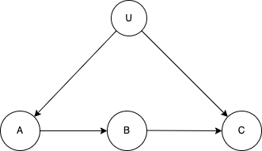

10 Strategies for Figuring out if X Causes Y
Experiments are a way of figuring out if something causes something else. The basic idea is: try it and find out. The tricky thing is figuring out how to try it out in a way that allows for confidence in beliefs about causal effects. A strategy that holds pride of place in the researcher’s toolkit is the randomized intervention. This is the strategy that is at the heart of most of the experimental research done by EGAP members. But there are other strategies that are sometimes more appropriate. Here we describe the ten most prominent strategies for figuring out causal effects.
1. Randomization
The strategy used in randomized control trials (or randomized interventions, randomized experiments) is to use some form of a lottery to determine who, among some group, will or won’t get access to a treatment or program (or perhaps who will get it first and who will get it later, or who will get one version and who will get another). The elegance of the approach is that it uses randomness to work out what the systematic effects of a program are. The randomness reduces the chance that an observed relationship between treatment and outcomes is due to “confounders”—other things that are different between groups (for example one might be worried that things look better in treatment areas precisely because programs choose to work in well-functioning areas, but knowing that the selection was random completely removes this concern). It is powerful because it guarantees that there is no systematic relationship between treatment and all other features that can affect outcomes, whether you are aware of them or not. For this reason it is often considered to be the gold standard. Randomization cannot be used always and everywhere however, both for ethical and practical reasons. But it can be used in many more situations than people think. See Humphreys and Weinstein (2009) for a discussion of strengths and limitations of the approach for research in the political economy of development.
2. Experimental Control (induced unit homogeneity)
A second strategy used more in lab settings and also in the physical sciences is to use experimental control to ensure that two units are identical to each other in all relevant respects except for treatment. For example if you wanted to see if a heavy ball falls faster than a lighter ball you might make sure that they have the same shape and size and drop them both at the same time, under the same weather conditions, and so on. You then attribute any differences in outcomes to the feature that you did not keep constant between the two units. This strategy is fundamentally different to that used in randomized trials. In randomized trials you normally give up on the idea of keeping everything fixed and seek instead to make sure that natural variation—on variables that you can or cannot observe—does not produce bias in your estimates; in addition you normally seek to assess average effects across a range of background conditions rather than for a fixed set of background conditions. The merits of the control approach depend on your confidence that you can indeed control all relevant factors; if you cannot, then a randomized approach may be superior.
3. Natural experiments (as-if randomization)
Sometimes researchers are not able to randomize, but causal inference is still possible because nature has done the randomization for you. The key feature of the “natural experiment” approach is that you have reason to believe that variation in some natural treatment is “as-if random.” For example say that seats in a school are allocated by lottery. Then you might be able to analyze the effects of school attendance as if it were a randomized control trial. One clever study of the effects of conflict on children by Blattman and Annan (2010) used the fact that the Lord’s Resistance Army (LRA) in Uganda abducted children in a fairly random fashion. Another clever study on Disarmament, Demobilization, and Reintegration (DDR) programs by Gilligan, Samii, and Mvukiyehe (2012) used the fact that an NGO’s operations were interrupted because of a contract dispute, which resulted in a “natural” control group of ex-combatants that did not receive demobilization programs. See Dunning (2012) for a guide to finding and analyzing natural experiments.
4. Before/after comparisons
Often the first thing that people look to in order to work out causal effects is the comparison of units before and after treatment. Here you use the past as a control for the present. The basic idea is very intuitive: you switch the lightswitch off and you see the light switch off; attributing the light change to the action seems easy even in the absence of any randomization or control. But for many social interventions the approach is not that reliable, especially in changing environments. The problem is that things get better or worse for many reasons unrelated to treatments or programs you are interested in. In fact it is possible that because of all the other things that are changing, things can get worse in a program area even if the programs had a positive effect (so they get worse but are still not as bad as they would have been without the program!). A more sophisticated approach than simple before/after comparison is called “difference in differences” – basically you compare the before/after difference in treatment areas with those in control areas. This is a good approach but you still need to be sure that you have good control groups and in particular that control and treatment groups are not likely to change differently for reasons other than the treatment.
5. Ex Post Controlling I: Regression
Perhaps the most common approach to causal identification in applied statistical work is the use of multiple regression to control for possible confounders. The idea is to try to use whatever information you have about why treatment and control areas are not readily comparable and adjust for these differences statistically. This approach works well to the extent that you can figure out and measure the confounders and how they are related to treatment, but is not good if you don’t know what the confounders are. In general we just don’t know what all the confounders are and that exposes this approach to all kinds of biases (indeed if you control for the wrong variables it is possible to introduce bias where none existed previously).
6. Ex Post Controlling II: Matching and Weighting
A variety of alternative approaches seek to account for confounding variables by carefully matching treatment units to one or many control units. Matching has some advantages over regression (for example, estimates can be less sensitive to choices of functional form), but the basic idea is nevertheless similar, and indeed matching methods can be implemented in a regression framework using appropriate weights. Like regression, at its core, this strategy depends on a conviction that there are no important confounding variables that the researcher is unaware of or is unable to measure. Specific methods include:
- Optimal full- and pair-matching (Hansen 2004), and see the optmatch package
- Optimal pair-matching with fine-balance via mixed integer programming (Zubizarreta, Paredes, and Rosenbaum 2014). See also the designmatch package and the paper comparing approaches (Los Angeles Resa and Zubizarreta 2016)
- Optimal multi-level matching (for designs with schools and students) (Pimentel et al. 2018)
- Sparse optimal matching
- Generalized full matching (Sävje, Higgins, and Sekhon 2017)
- Coarsened exact matching
- Genetic matching (Diamond and Sekhon 2013)
- Entropy balancing (Hainmueller 2012)
- Inverse propensity weighting (Glynn and Quinn 2010)
- Stable balancing weights (Zubizarreta 2015), and the use of
- Synthetic controls (Abadie, Diamond, and Hainmueller 2015).
7. Instrumental variables (IV)
Another approach to identifying causal effects is to look for a feature that explains why a given group got a treatment but which is otherwise unrelated to the outcome of interest. Such a feature is called an instrument. For example say you are interested in the effect of a livelihoods program on employment, and say it turned out that most people who got access to the livelihoods program did so because they were a relative of a particular program officer. Now suppose that being a relative of the program officer does not affect job prospects in any way other than through its effect on getting access to the livelihoods program. If so, then you can work out the effect of the program by understanding the effect of being a relative of the program officer on job prospects. This has been a fairly popular approach but the enthusiasm for it has died a bit, basically because it is hard to find a good instrument. One smart application are studies on the effects of poverty on conflict which use rainfall in Africa as an instrument for income/growth. While there are worries that the correlation between conflict and poverty may be due to the fact that conflict causes poverty, it does not seem plausible that conflict causes rainfall! So using rainfall as an instrument here gave a lot more confidence that really there is a causal, and not just correlational, relationship between poverty and conflict.1
8. Regression discontinuity designs (RDD)
The regression discontinuity approach works as follows. Say that some program is going to be made available to a set of potential beneficiaries. These potential beneficiaries are all ranked on a set of relevant criteria, such as prior education levels, employment status, and so on. These criteria can be quantitative; but they can also include qualitative information such as assessments from interviews. These individual criteria are then aggregated into a single score and a threshold is identified. Candidates scoring above this threshold are admitted to the program, while those below are not. “Project” and “comparison” groups are then identified by selecting applicants that are close to this threshold on either side. Using this method we can be sure that treated and control units are similar, at least around the threshold. Moreover, we have a direct measure of the main feature on which they differ (their score on the selection criteria). This information provides the key to estimating a program effect from comparing outcomes between these two groups. The advantage of this approach is that all that is needed is that the implementing agency uses a clear set of criteria (which can be turned into a score) upon which they make treatment assignment decisions. The disadvantage is that really reliable estimates of impact can only be made for units right around the threshold. For overviews of RDD, see Skovron and Titiunik (2015) and Lee and Lemieux (2013); for two interesting applications, see Manacorda, Miguel, and Vigorito (2011) on Uruguay and Samii (2013) on Burundi.
9. Process tracing
In much qualitative work researchers try to establish causality by looking not just at whether being in a program is associated with better outcomes but (a) looking for steps in the process along the way that would tell you whether a program had the effects you think it had and (b) looking for evidence of other outcomes that should be seen if (or perhaps: if and only if) the program was effective. For example not just whether people in a livelihoods program got a job but whether they got trained in something useful, got help from people in the program to find an employer in that area, and so on. If all these steps are there, that gives confidence that the relationship is causal and not spurious. If a program was implemented but no one actually took part in it, this might give grounds to suspect that any correlation between treatment and outcomes is spurious. The difficulty with this approach is that it can be hard to know whether any piece of within-case evidence has probative value. For example a program may have positive (or negative) effects through lots of processes that you don’t know anything about and processes that you think are important, might not be. See Humphreys and Jacobs (2015) for a description of the Bayesian logic underlying process tracing and illustrations of how to combine it with other statistical approaches.
10. Front Door Strategies (Argument from mechanisms)
A final approach, conceptually close to process tracing, is to make use of mechanisms. Say you know, as depicted in the picture below, that \(A\) can cause \(C\) only through \(B\). Say moreover that you know that no third variable causes both \(B\) and \(C\) (other than, perhaps, via \(A\)) and no third variable causes both \(A\) and \(B\). Then covariation between \(A\) and \(B\) and between \(B\) and \(C\) can be used to assess the effect of \(A\) on \(C\). The advantage is that causality can be established even in the presence of confounders — for example even if, as in the picture below, unobserved variables cause both \(A\) and \(C\). The difficulty however is that the strategy requires a lot of confidence in your beliefs about the structure of causal relations. For more see Pearl (2000).
